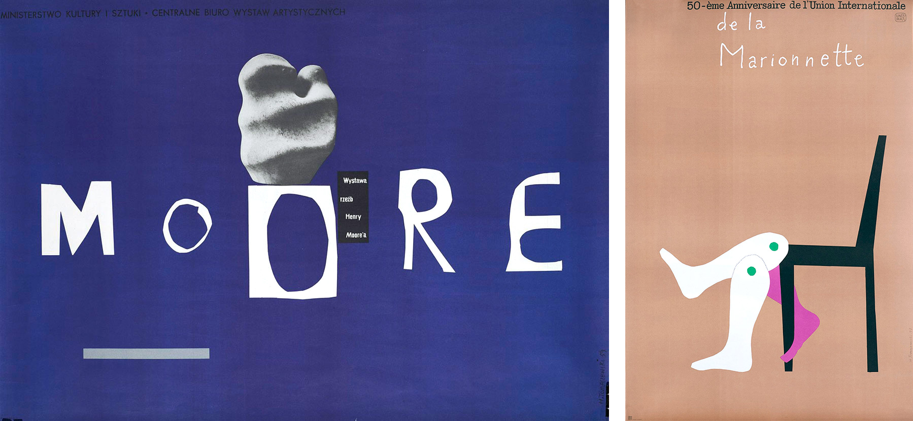
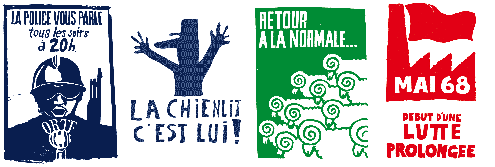
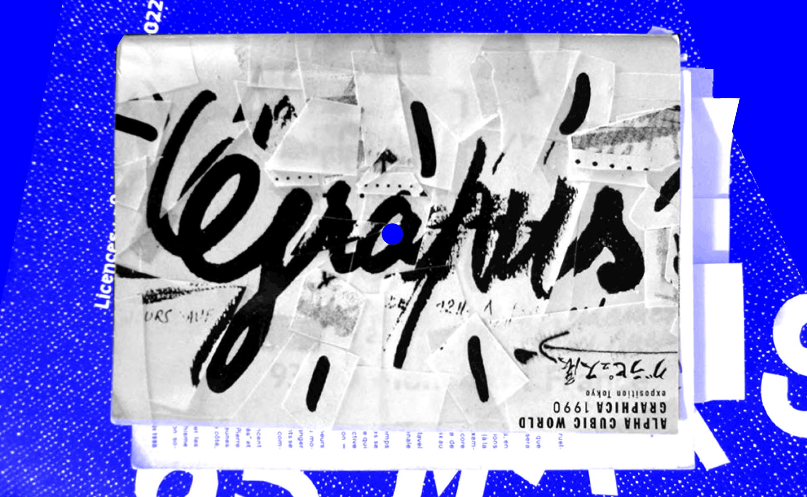

1960 – 1970
The Training Years
Trained in Deco Arts, he co-founded the Grapus collective at the end of the 1960s with his friends François Miehe, Gérard Paris-Clavel, Jean-Paul Bachollet and Alex Jordan. This fine team has totally reinvented "public utility graphic design" in the space of twenty years, collectively creating thousands of images committed, enraged, funny, powerful, poetic...Poland and Henryk Tomaszewski
In 1964-65, Pierre Bernard and his acolyte Gérard Paris-Clavel - who became another founding member of Grapus with François Miehe - discovered Poland, then part of the Soviet bloc. Pierre is hired as an intern by Henryk Tomaszewski who teaches him cultural graphics and the art of the sense of the graphic message.It was Michel Quarez who had left the previous year on an internship there who had brought the "Polish" virus back to the Arts Deco. It must be said that Tomaszewski's work was impressively modern and energetic (see pictures below). His creations, very strong and colorful, fight for the independence of graphics and cultural message, at the time of Stalinism and Polish socialist realism. Pierre Bernard had just taken his first shot of CMYK.
He will then become aware, thanks to his Polish'Master' that: "A poster is the taking possession of a public message by an individual (...). It is a public object that belongs to him intimately, since it is his creation. It is the individual investment in an act of collective exchange".

Bauhaus in the Mai 68 country
In 1967, Bernard was a student at Arts-Déco. There he met his two friends and future collaborators. With the events of May 68, the three men meet in the popular workshops, where the students of Fine Arts and Deco Arts create "visual contests" and produce every day thousands of posters for the popular struggle.
The Grapus years
In 68, the French government realized that the Bauhaus movement had fallen through the cracks in France, and decided to install the teaching members of the Bauhaus in Ulm Street (the German city) who found themselves at that time without subsidies. The Institut de l'Environnement was born, in which the three men found a place where they could continue to explore alternative forms of expression and question submission to the commission. If this type of place of collective creation has already been experimented since the 1950s by the Americans of Push Pin Studios, or in the 1960s by the Spanish antifrench painters of Equipo Crónica, then the Institute of the Environment proposes a new way to make coincide political commitment and graphic creation.
In this political and communist environment, described as'Stalinist' by his opponents, Bernard, Paris-Clavel and Miehe founded Grapus, a contraction of'Stalinist Crapule', crap-stal and'graphic artist'.